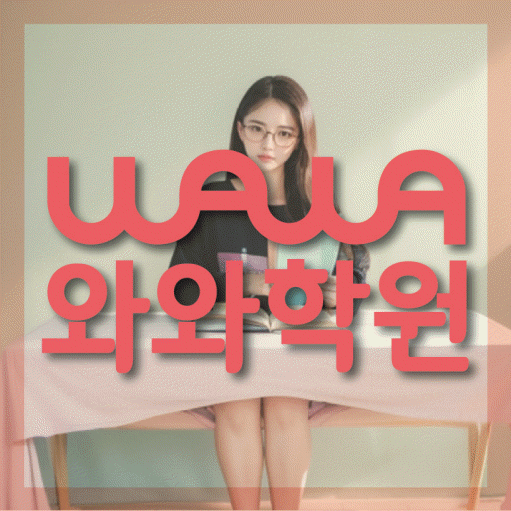

HIGH SCHOOL MATH
길음동 고등 수학학원
길음동 고등 수학학원 선택 전 모의고사까지 연결하는 학습 점검, 모의고사 오답·문항 선택과 선수 개념·단원 연결 점검, 내신·모의고사 계획과 센터 정보를 확인하세요.
01 Quick answer
길음동 고등 수학: 모의고사까지 연결하는 학습 점검
이 페이지는 길음동 학생의 ‘모의고사까지 연결하는 학습 점검’을 자료·행동·재확인의 순서로 정리합니다. 진단 자료: 최근 기출이나 모의고사에서 사용 개념·첫 풀이 경로·소요 시간을 문항별로 적으세요. 이번 행동: 오답을 지식 부족과 문항 선택 문제로 나누고 같은 유형을 제한 시간 안에 다시 푸세요. 재확인: 다음 회차에서 풀이 시작점과 문항 선택 순서가 안정되는지 비교하세요.
확인 기준
길음동 시험지에서는 모의고사 오답·문항 선택에서 막힌 이유를, 다음 계획에서는 선수 개념·단원 연결의 확인일을 찾아 이용 조건과 구분합니다.


 010-6839-8283
010-6839-8283학습 답변 요약
핵심 주제는 ‘모의고사까지 연결하는 학습 점검’입니다. 모의고사 오답·문항 선택과 선수 개념·단원 연결의 출발 상태를 확인하고 수학 학습 루틴과 개념 연결의 실행 기록과 학교·센터 사실을 분리해 살펴봅니다.
길음동 고등 수학 진단: 모의고사까지 연결하는 학습 점검
길음동에서 살필 고등 수학 주제는 ‘모의고사까지 연결하는 학습 점검’입니다. 학생에게 ‘모의고사 점수만 보고 개념·조건·계산·문항 선택 중 실제 원인을 나누지 못하는지’를 묻고 답을 최근 풀이 흔적과 비교하세요.
끝으로 ‘현재 단원의 문제에서 이전 학년·앞 단원의 개념이 필요한 지점을 알아보지 못하는지’를 확인해 단순 실수와 반복되는 병목을 구분하고 모의고사 오답·문항 선택에 설명이 필요한지, 선수 개념·단원 연결을 혼자 연습할지 판단하세요.
모의고사 문항 선택 기록과 선수 개념 연결 문제를 함께 살피는 순서
많은 자료보다 역할이 다른 두 기록이 낫기 때문에 ‘최근 모의고사 시험지, 문항별 소요 시간과 처음 선택한 풀이 경로’는 출발 상태, ‘최근 문제에서 다시 필요해진 선수 개념과 현재 단원 풀이가 끊긴 위치’는 풀이 과정으로 두고 같은 날짜 기준으로 비교하세요.
다시 볼 날짜에는 ‘회차가 달라져도 문항 선택 순서와 풀이 근거가 안정되는지’와 ‘단원명이 달라도 필요한 선수 개념을 스스로 찾아 현재 풀이에 적용하는지’를 차례로 묻습니다. 두 답의 변화가 이 학습 초점에 필요한 설명과 독립 연습을 나누는 기준입니다.
모의고사 문항 선택과 선수 개념 연결의 내신 일정과 재확인일을 나누는 기준
내신 기간에도 누적 학습을 완전히 멈추지 마세요. ‘내신 범위 학습과 모의고사 누적 약점 보완의 주간 비중을 조정하는 기준’과 ‘내신 범위의 진도와 수능형 누적 문제에 필요한 선수 개념 보완을 따로 배치하는 기준’을 살펴 학교 범위와 처음 보는 문제에 필요한 시간을 따로 남깁니다.
이번 주에는 학교 범위에 적용할 모의고사 오답·문항 선택과 선수 개념·단원 연결 연습 항목과 새 문제에서 확인할 기준을 각각 한 줄씩 정합니다. 시험 뒤 네 기록을 비교해 공통 기초와 시험별 문제를 구분하세요.
‘모의고사까지 연결하는 학습 점검’을 계획으로 옮길 때 모의고사 오답·문항 선택은 먼저 확인하고 선수 개념·단원 연결은 별도 재확인일을 정하세요. 마지막으로 모의고사 오답·문항 선택과 선수 개념·단원 연결의 완료 기록을 나눠 보고 재확인 기준을 통과하지 못한 영역만 이어 가세요.
모의고사까지 연결하는 학습 점검: 확인된 센터 사실과 이용 조건
제공 목록에서는 사대부고·용문고 등을 확인할 수 있지만, 학교별 진도와 자료 반영 방식은 목록이 아니라 상담 시점의 답변으로 판단해야 합니다.
수학 가능 학년 항목에서 고1·고2·고3 표기를 확인할 수 있어 수학 학습 루틴과 개념 연결을 어느 학년에 적용하는지는 현재 개설 범위와 함께 물어보세요. 페이지가 안내하는 센터명은 와와학습코칭센터 종암점, 제공 주소는 서울 성북구 종암로27길 13 도원프라자 501입니다. 와와학습코칭센터 종암점 이용 조건을 비교할 때는 교습비와 시간표를 상담 시점에 다시 확인하고 제공 주소에서의 이동 시간을 계산합니다.
모의고사 문항 선택에서 선수 개념 연결로 이어지는 7일 실행안
기준선 자료로 ‘최근 모의고사 시험지, 문항별 소요 시간과 처음 선택한 풀이 경로’를 보존하세요. 7일 동안 ‘오답을 지식 부족과 풀이 판단으로 나누고 같은 유형의 새 문제를 제한 시간에 다시 풀기’를 해 보고 도움을 받은 지점과 혼자 한 지점을 구분합니다.
다음 점검 질문은 ‘회차가 달라져도 문항 선택 순서와 풀이 근거가 안정되는지’입니다. 답이 불분명하면 ‘오답을 지식 부족과 풀이 판단으로 나누고 같은 유형의 새 문제를 제한 시간에 다시 풀기’의 설명 단계를 보완하고, 분명하면 ‘막힌 문제에 필요한 앞 개념만 짧게 복습하고 현재 문제로 돌아와 연결 이유를 적기’를 다음 주 행동으로 정합니다.
최근 시험지로 준비하는 모의고사 문항 선택 상담 질문
상담 전 ‘모의고사까지 연결하는 학습 점검’을 설명할 최근 수학 자료와 가능한 가정 학습 시간을 적어 두세요. ‘등급 변화가 없을 때 문제 수보다 먼저 바꿀 풀이 절차와 시간 기록이 무엇인지’와 ‘진도를 되돌릴 때 전체 복습이 아니라 필요한 선수 개념만 고르는 기준이 무엇인지’를 분리해 질문합니다.
답변이 모의고사 오답·문항 선택의 실제 행동과 선수 개념·단원 연결의 점검일로 이어지는지 확인하세요. 운영 정보는 확인된 사실만 따로 기록합니다.
- 학생 자료최근 시험지와 모의고사 오답·문항 선택 표시 위치
- 시험 계획학교 범위표와 선수 개념·단원 연결 마감일
- 재확인수학 학습 루틴 확인 날짜와 학생 설명 기록
- 이용 조건수학 가능 학년(고1·고2·고3)·시간표·교습비·통학 동선
02 Parent perspective
길음동 고등 수학 학부모 상담 상황
아래 길음동 고등 수학 상담 장면은 실제 이용 후기나 특정 학생의 성과가 아닌 준비용 가상 예시입니다. 학습 결과는 학생의 출발점과 실천 정도에 따라 달라질 수 있습니다.
내신 범위와 누적 학습이 겹친 길음동 가상 사례입니다. ‘모의고사까지 연결하는 학습 점검’을 기준으로 모의고사 오답·문항 선택의 마감일과 선수 개념·단원 연결의 최소 행동을 다른 줄에 둡니다.
길음동 상담 뒤 등록 여부를 비교하는 가상 장면입니다. 학부모는 수학 가능 학년(고1·고2·고3)·교습비·시간표를 사실 항목으로 적고 수학 학습 루틴을 다시 확인할 날짜는 학습 계획에 따로 남깁니다.
03 FAQ
길음동 고등 수학 자주 묻는 질문
학생 자료, 가능 학년과 실제 이용 조건을 나누어 답했습니다.
길음동 고등 수학에서 ‘모의고사까지 연결하는 학습 점검’은 어떤 자료부터 확인하나요?
먼저 ‘최근 모의고사 시험지, 문항별 소요 시간과 처음 선택한 풀이 경로’가 보이는 자료 위치와 날짜를 적습니다. 이후 ‘오답을 지식 부족과 풀이 판단으로 나누고 같은 유형의 새 문제를 제한 시간에 다시 풀기’를 수행하고 ‘회차가 달라져도 문항 선택 순서와 풀이 근거가 안정되는지’에 학생이 혼자 답하는지 확인하세요.
모의고사 오답·문항 선택과 선수 개념·단원 연결 진단 기록은 어떻게 나누나요?
한 표 안에서도 모의고사 오답·문항 선택과 선수 개념·단원 연결의 문제 번호와 다음 행동을 다른 열에 둡니다. 같은 날짜 기록끼리 비교하면 원인이 선명해집니다.
내신과 모의고사에서 모의고사 오답·문항 선택과 선수 개념·단원 연결 비중은 어떻게 나누나요?
내신과 모의고사 모두에서 모의고사 오답·문항 선택과 선수 개념·단원 연결을 확인하되 자료와 마감일은 나눕니다. 판단할 때는 ‘내신 범위 학습과 모의고사 누적 약점 보완의 주간 비중을 조정하는 기준’과 ‘내신 범위의 진도와 수능형 누적 문제에 필요한 선수 개념 보완을 따로 배치하는 기준’을 각각 대조하세요.
상담 전 수학 학습 루틴과 개념 연결을 확인하려면 어떤 자료를 가져가나요?
상담 자료는 수학 학습 루틴과 개념 연결의 수행 흔적이 보이는 교재와 주간 계획표면 충분합니다. ‘과제량보다 완료·질문·재확인·계획 수정의 주기를 어떻게 확인하는지’도 메모해 가세요.
길음동 고등 수학 상담에서 가능 학년과 참고 학교는 어떻게 확인하나요?
길음동 페이지 제공 자료에는 수학 고1·고2·고3이 가능 학년으로 기재돼 있습니다. 현재 고등 수학 시간표와 반 구성은 등록 전에 다시 확인하세요. 학교 정보에는 사대부고·용문고 등이 보이지만 이는 가능 학교 확정 목록이 아닙니다. 학생이 다니는 학교의 범위와 현재 수업 자료를 함께 대조하세요.
04 Related
길음동 관련 학원·상담 페이지
같은 지역의 과목 조합과 학년 카테고리, 앞뒤 지역 안내를 함께 확인하세요.